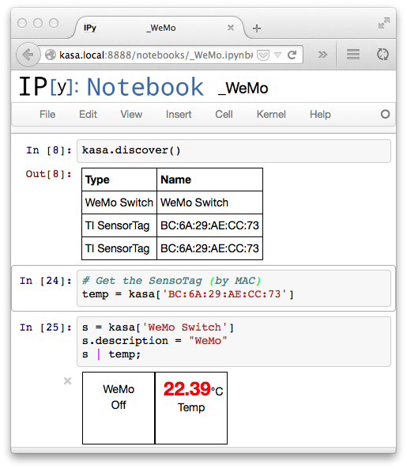
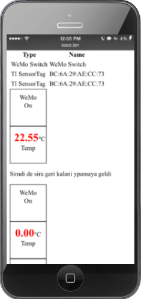
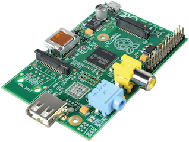

Kasa
Kasa gives you the most powerful tools to control and analyze your home.
Discover and Control Your Devices
Quick, interactive access to your devices
We support a growing number of devices that can be easily discovered, configured and made available. All of this is kept behind the scenes, so all you have to do is run the discover function from within your browser.
# Discover supported devices in your home
>>> kasa.discover()
Type Name
----------------------------
WeMo Switch 'AC'
SensorTag 'Living Room'
# Access power switch by name
>>> ac = kasa['AC']
>>> ac.on()
WeMo Switch 'AC' turned on.
# Access the temperature sensor
>>> temp = kasa['Living Room'].temperature
>>> printtemp
'Living Room' temperature is 23.0C.
Mobile Friendly By Design
Cool! But ideally I want to access these devices from a smartphone or a tablet.
View from desktop browser
Do your development interactively form the luxury of your fullscreen browser

View from smartphone
Access the site from mobile to monitor and control your devices

Powerful Interface for Writing Code
Great, I can turn control things via code or GUI. But how do I get these devices to work together to do something useful?
# When temperature goes above 23C, turn on AC
>>> (temp > 23) | ac.on()
# Turn on AC at 6pm every day
>>> when('6pm') | ac.on()
# Turn lights on/off randomly every 5 mins
>>> every('5min')| random_binary() | ac.on()
Interface with the amazing Python scientific ecosystem
# Plot readings form sensor in real-time
>>> temp.plot()
## Plot of the temperature, printed in IPython
# Save readings every 15 seconds
>>> temp.store('temp', every=15)
# Read historical values
>>> val = kasa.read('temp')
# Pandas DataFrame for manipulating, plotting, histogramming, correlations, intro to scikit
Create social applications with built-in integration with Twilio, Facebook, and Twitter.
# Post temperature on Twitter every day
>>> temp.every('day') | twitter.post("The temperature outside is {}")
# Let your friends know when you are home
>>> motion_sensor | facebook.post("I just got home!")
# Send text messages when something is wrong
>>> (temp > 25) | twilio.sms("The temperature at home is too high! ({})")
We fully support some hardware devices. Using these devices, it is super-easy to control them via an intuitive programming interface.
The SensorTag has all the sensors you need to get started. Its sensors include a temperature sensor, a barometer, a magnetometer, and a gyroscope. It can function as an iBeacon transmitter, enabling you to do all sorts of cool things programmatically. It even has two configurable buttons.
And all of this for $25. Batteries and shipment included!
The WeMo allows you to control most devices by turning their power on or off. It works especially well with cheap and old devices that have as little electronics as possible. Things like ACs, electric heaters, and kettles.
Costs $50
I'm Sold. What Do I Need?

If you have a RaspberryPi, all you need to get started is our custom image. Burn it to an SD card and plug it in. Welcome to the world of Kasa!
Once you have the base system running, you can add wireless connectivity using the modules below. These are all pre-configured, so all you need is to plug them in and power it up!
We think you should have full control over the devices you own. We believe that any software that accesses your devices should be open-source. And nobody but you should have access to your data.
This is why we built Kasa, a system that puts you in control. There is no cloud component, no need to open up ports on your router, no closed-source code that runs in your apartment. It's your home; you should control it.